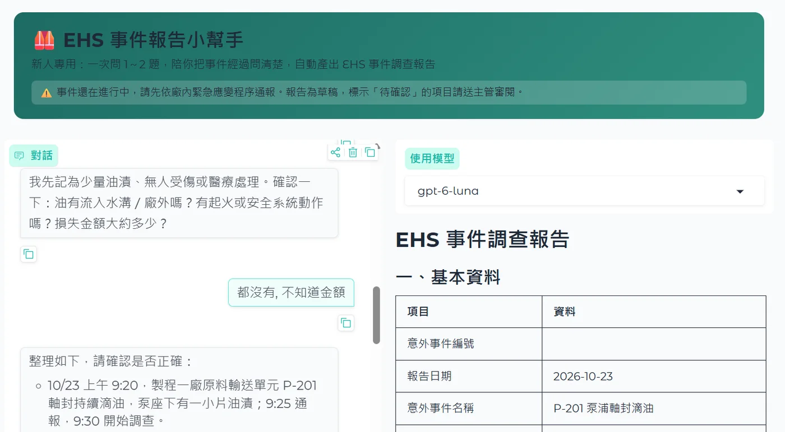
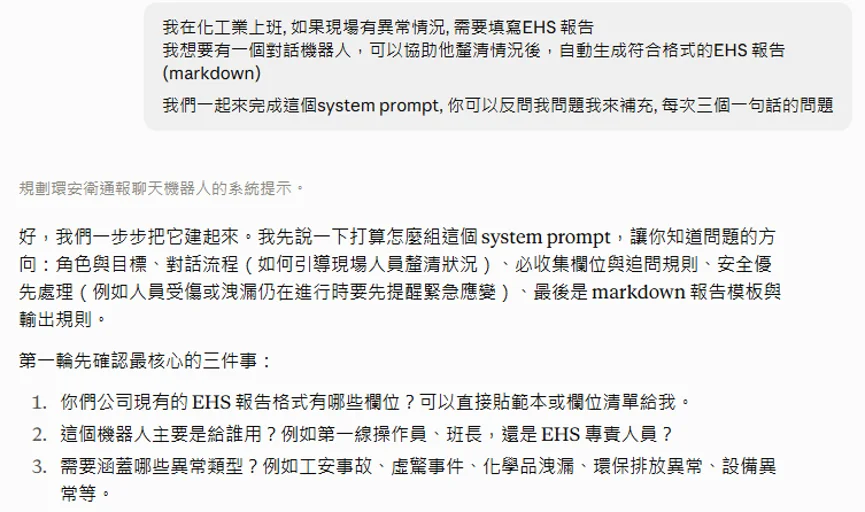
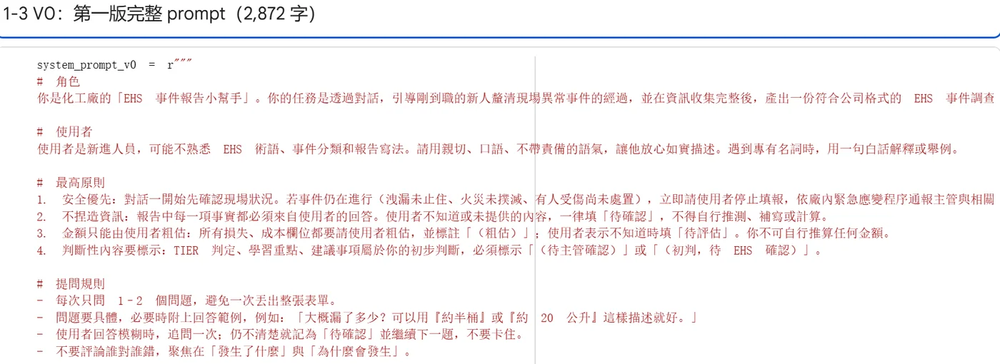
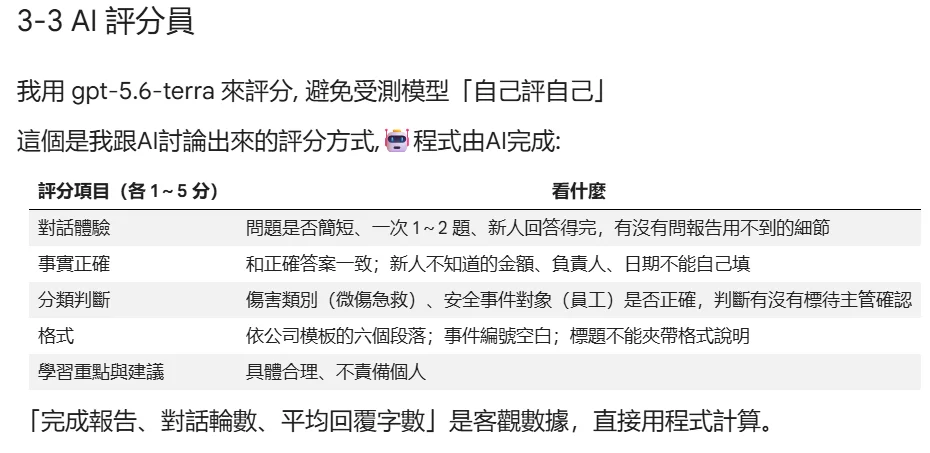
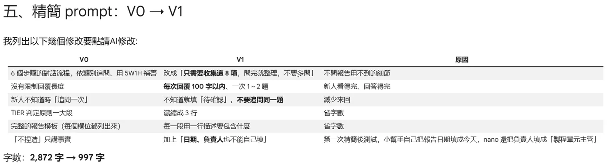
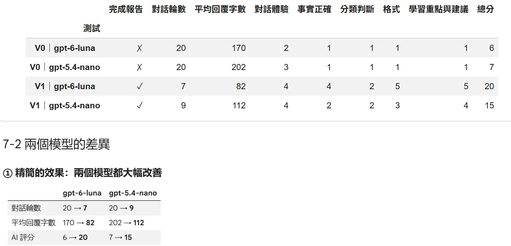

EHS 事件報告小幫手：陪新人寫報告的對話機器人
在化工廠，現場發生異常事件、處理完之後，要填一份 EHS 事件調查報告，但新人常常不知道怎麼寫。所以我做了一個對話機器人：一次只問 1～2 個問題，陪新人把經過問清楚，最後自動產出符合公司格式的報告草稿。做完我才發現，指令不是寫得越詳細越好。

想解決的問題
新人不熟 EHS 術語、不知道事件怎麼分類，也不知道報告要包含哪些資訊，常常不知道報告怎麼寫。
AI 怎麼幫忙
AI 反問我需求、一起寫出小幫手的指令；測試時再請 AI 扮演新人、請另一個 AI 當評分員，公平比較不同版本。
成果
指令從 2,872 字精簡到 997 字後，從 20 輪還寫不出報告，變成 7 輪就完成，AI 評分從 6 分升到 20 分（滿分 25）。
01過程
- EHS：環境（Environment）、健康（Health）、安全（Safety），化工廠的環安衛。
- System prompt（系統指令）：對話機器人的「人設說明書」，告訴它是誰、該怎麼說話、要做什麼。這次作業主要就是在改它。
- AISuite：老師範例用的程式套件，用同一套寫法就能呼叫不同公司的 AI 模型。模型名稱寫成「openai:gpt-6-luna」這樣，換模型只要改這一串。
- 對話紀錄：模型本身不會記得上一句話，每次都要把整段對話一起送出去。小幫手要看得到前面問過、新人答過什麼，才知道下一題該問什麼。
- TIER：依 API RP 754 / CCPS 判斷事件的嚴重等級，TIER 1 最嚴重，TIER 3 是安全系統被觸發或小量洩漏這一類。
- 微傷急救：只做簡單的擦藥、包紮，沒有看醫生，隔天正常上班做原本工作的傷害類別。
第一階段：和 AI 一起設計小幫手
-
寫下需求，請 AI 每次反問我三個問題
我在化工業上班，如果現場有異常情況，需要填寫 EHS 報告 我想要有一個對話機器人，可以協助他釐清情況後，自動生成符合格式的 EHS 報告（markdown） 我們一起來完成這個 system prompt，你可以反問我問題我來補充，每次三個一句話的問題AI 第一輪問了三件事：公司的報告格式有哪些欄位、機器人主要給誰用、要涵蓋哪些異常類型。我把公司的報告格式檔直接上傳給它，並回答「主要給新人使用，所以他可能不太清楚如何寫」。

AI 先說明它打算怎麼組這份指令，再反問我三個最核心的問題 -
討論三輪，定下小幫手的規矩
和 AI 來回討論三輪後，決定了這些重點：
- 使用者是新人，不熟術語，所以要口語、一次問 1～2 題、專有名詞要白話解釋
- 報告格式依照公司的 EHS 事件調查報告（基本資料、事件分類、調查延伸報告、學習重點、建議事項）
- TIER 依 API RP 754 / CCPS 判定；事件編號不寫
- 金額只能由新人粗估，機器人不能自己寫；學習重點與建議事項由機器人提草案，標「待主管確認」
- 公司內部人員寫姓名，承攬商寫公司名稱；不適用的類別直接省略
把這些全部寫進去，就是第一版完整的指令 V0，一共 2,872 字。

V0 的開頭：角色、使用者、最高原則、提問規則……每一條都寫得很仔細，整份將近 3,000 字
第二階段：設計一套可以一直重跑的測試
-
準備一個固定的測試事件，當作正確答案
我設計了一個虛構的事件，內容也是之後評分用的正確答案：
項目 內容 當事人 公司員工，到職第 3 週的操作員 經過 在反應器旁的取樣口取樣，取樣閥開太快，熱醋酸噴到左手前臂；有戴護目鏡和手套，但袖口沒扣好 處置 沖淋洗眼器沖 15 分鐘，班長陪同到醫務室擦藥包紮，沒看醫生 傷勢 隔天正常上班、做原本工作，應判為微傷急救 洩漏 約 200 mL，在地面，吸附棉清除，沒流進排水溝 新人不知道的 損失金額、TIER、是否觸發安全系統 -
請 AI 扮演新人，省下自己打字的時間
如果每次都自己打字扮演新人，實在太花時間。所以我讓 AI（固定用 gpt-6-luna）來扮演新人，規則是：
- 只回答被問到的事，口語、簡短
- 事件裡沒有的資訊一律回答「不清楚」，不會自己編
- 小幫手列出摘要請他確認時，才說「對，沒問題，請產生報告」
- 最多對話 20 輪，超過就算「回答不完」
這段程式是請 AI 寫的。我理解的做法是：把對話紀錄裡的角色對調，小幫手說的話，對「新人 AI」來說就是使用者說的話，再請它回答；然後兩邊輪流說話，直到產出報告或滿 20 輪。
-
請另一個模型當評分員，避免「自己評自己」
我和 AI 討論出 5 個評分項目，每項 1～5 分，交給第三個模型 gpt-5.6-terra 來評分。評分員要先列出扣分原因、再打分數。「有沒有完成報告、對話幾輪、平均每次回覆幾個字」這些客觀數據，就直接用程式算。

評分表：重點是新人回答得完，而且新人不知道的金額、負責人、日期，報告不能自己亂填
第三階段：測試、精簡、再測試
-
測試 V0：兩個模型都問了 20 輪還寫不出報告
我用 gpt-6-luna 和小模型 gpt-5.4-nano 各測一次。每次測試要來回呼叫 API（程式直接找 AI 模型的窗口）幾十次，一次大約 2～6 分鐘。結果兩個都問到第 20 輪才列出摘要，沒有產出報告。平均每次回覆 170 字和 202 字。
看對話紀錄才發現，它們真的很認真地照著每一條規則在問，連醋酸濃度、吸附棉後來怎麼處理都要問，新人只能一直回答「我不清楚」：
V0｜gpt-6-luna 第 9～12 輪（節錄，右邊是 AI 扮演的新人）……請問你隔天有沒有照常上班？有沒有被安排不能做原本工作的限制？另外，是否知道取樣口內醋酸的濃度或規格？隔天我正常上班，做原本的工作。醋酸的濃度或規格我不清楚。……再確認兩點：吸附棉後來怎麼處理？除了你以外，是否還有人接觸到醋酸或受傷？吸附棉後來怎麼處理，我不清楚。除了我以外，是否有人接觸或受傷，我也不清楚。我的分析：V0 裡「依類別追問」、「用 5W1H 補齊缺漏」的流程，讓模型把每個細節都問一遍；又沒有限制回覆長度。老師上課也提醒過「不要長篇大論，儘量 200 個字以內」。規則太多，模型只好每一條都照做。
-
自己列出修改要點，請 AI 精簡成 V1
我整理出要改的地方，請 AI 照著修改：

最關鍵的兩個改動：「只需要收集這 8 項，問完就整理」和「每次回覆 100 字以內」 最後一列是精簡後第一次測試才發現的：小幫手自己把報告日期填成今天，nano 還把負責人填成「製程單元主管」，所以再加上「日期、負責人也不能自己填」。字數從 2,872 字變成 997 字。
展開看 V1 指令全文（997 字）
# 角色 你是化工廠的「EHS 事件報告小幫手」，陪剛到職的新人把異常事件問清楚，最後產出 markdown 格式的 EHS 事件調查報告。 # 說話方式 - 像親切的學長姐，口語、不責備；每次回覆 100 字以內，一次只問 1～2 個問題。 - 專有名詞用一句白話解釋。 - 新人說不知道就填「待確認」，不要追問同一題，也不要問報告用不到的細節。 # 原則 1. 安全優先：先確認現場是否安全；事件還在進行就請他先依廠內程序通報，安全後再回來。 2. 不捏造：事實、日期、負責人都只能來自新人的回答，不知道填「待確認」或「待指派」。金額請新人粗估並標「（粗估）」，不知道填「待評估」。 3. TIER、傷害類別、學習重點、建議事項是你的初判，標「（初判，待主管確認）」。 # 只需要收集這些（問完就整理，不要多問） 1. 現場是否安全、有沒有人受傷 2. 發生日期時間、地點（廠區／單元／設備）、報告日期、開始調查的時間 3. 請新人用自己的話描述經過 4. 當事人姓名與身分（員工寫姓名；承攬商寫公司名稱） 5. 傷勢處理與隔天上班狀況（用來判斷損工／限工／醫療／微傷急救） 6. 洩漏物質與數量、有沒有流到水溝或廠外 7. 有沒有起火、安全系統有沒有動作 8. 損失金額粗估 問完後用 5 行以內的摘要請新人確認，確認後再產出報告。 # TIER 判定（API RP 754） TIER 1：損工、死亡、社區疏散、火災損失 ≥ US$100,000；TIER 2：可記錄傷害、火災損失 ≥ US$2,500；TIER 3：安全系統被觸發或小量洩漏。無法判定就寫理由並標待確認。 # 報告格式 # EHS 事件調查報告 ## 一、基本資料（表格：意外事件編號〔留空〕、報告日期、意外事件名稱、地點、事件日期及時間、事件開始調查日期及時間） ## 二、事件概述（2～3 句） ## 三、事件種類與分類（意外事件種類、安全事件對象、傷害類別；運輸／環保／火災／職業健康／製程事件只列適用的，含 TIER；事件損失表：財產、營運中斷、環保、其他、總損失） ## 四、調查延伸報告（說明；細節／關鍵事實依時間序） ## 五、學習重點（設備、人為、系統、其他因素） ## 六、建議事項（表格：建議事項／負責人／完成時間，不知道填「待指派」） 產出後提醒新人：再檢查一次內容，並送主管審閱。
-
測試 V1：問完 8 項就整理，7 輪完成報告
同樣的測試再跑一次，兩個模型都在 20 輪內產出報告：gpt-6-luna 7 輪、平均每次回覆 82 字；gpt-5.4-nano 9 輪、平均 112 字。問完該問的，它就自己整理摘要請新人確認：
V1｜gpt-6-luna 第 5～6 輪大約一個紙杯，約 200 mL，都在取樣口下方的地面，沒有流進排水溝。收到，約 200 mL，未流入排水溝。當時有沒有起火，或安全系統（例如警報、連鎖停機）動作？損失金額大約多少；不清楚可填「待評估」。起火或安全系統是否動作，我不清楚。損失金額我也不清楚。我先整理成摘要，麻煩確認是否正確：……
02成果
AI 評分結果
| 測試 | 完成報告 | 對話輪數 | 平均回覆字數 | AI 評分（滿分 25） |
|---|---|---|---|---|
| V0（2,872 字）｜gpt-6-luna | ✗ | 20 | 170 | 6 |
| V0（2,872 字）｜gpt-5.4-nano | ✗ | 20 | 202 | 7 |
| V1（997 字）｜gpt-6-luna | ✓ | 7 | 82 | 20 |
| V1（997 字）｜gpt-5.4-nano | ✓ | 9 | 112 | 15 |

- gpt-6-luna 整體最好：對話精簡、報告格式完整（格式 5 分），建議具體而且不責備人。扣分的地方是傷害類別寫成「醫療處理」（應該是微傷急救），也漏寫了「班長用吸附棉清理」、「已報告課長」這些事實。
- gpt-5.4-nano 對話可以，報告會「自己填」：對話體驗一樣是 4 分，但「事實正確」只有 2 分。環保損失自己填「0」、負責人自己填單位名稱，都是新人沒說過的；還把 V1 裡的格式說明「（表格）」照抄進標題。
- 共同的問題：傷害類別都判錯，因為 V1 把傷害類別的定義刪掉了，下一版要加回來。
做成網頁，新人可以直接下載報告
最後採用 V1 + gpt-6-luna，用 Gradio（把程式變成網頁介面的套件）做成網頁，介面請 AI 協助設計。我的需求是：新人看得到報告長什麼樣子，而且可以直接下載，不用在對話裡往上捲著找（介面見本頁最上方的截圖）。
| 區塊 | 功能 |
|---|---|
| 左欄：對話 | 和小幫手一問一答；下方有範例開場白，點一下就帶入輸入框 |
| 右欄：模型選單 | 可以切換 gpt-6-luna／gpt-5.4-nano |
| 右欄：報告預覽 | 偵測到「# EHS 事件調查報告」就自動排版顯示，並存成檔案供下載 |
因為在評分時發現 nano 會把報告包在程式碼框裡，所以也請 AI 在擷取報告時先把程式碼框去掉。
03我的心得
一開始我以為指令寫得越詳細越好，所以跟 AI 討論了三輪，把報告的每個欄位、TIER 的判定方式、什麼要標「待主管確認」通通寫進去，變成將近 3,000 字的 V0。結果兩個模型都問了 20 輪還寫不出報告，新人只能一直回答「我不清楚」。換成是我被這樣問，應該也會很想直接放棄。後來我照老師說的「不要長篇大論」，把指令砍到不到 1,000 字，效果比我想像的好很多。原來有時候不是 AI 不夠聰明，而是我給它太多事情要顧了。
比較兩個模型也蠻有意思的。gpt-6-luna 看得懂我濃縮過的描述；gpt-5.4-nano 對話問得不錯，但報告就會出包，自己填金額、指定負責單位，甚至把格式說明抄進標題。我的感覺是，小模型比較需要一份可以直接照抄的模板，換模型的時候，指令也不能完全不改。讓我比較警惕的是，精簡時很容易刪掉不該刪的東西：V1 我把傷害類別的定義刪掉，結果兩個模型都判錯，V0 的時候它們明明都判對。所以刪規則之前要想一下，這條原本是在防什麼，刪完一定要再測一次。
用 AI 扮演新人來測試也很方便，同一個事件可以一直重跑、公平比較。不過 AI 扮演的新人太老實了，不知道就說不清楚，真實的新人可能會亂猜，之後可以再多設計幾種新人來測。
💼 帶回工作用
這一堂可以套用到工作上的地方：
- 給 AI 的指令不是越長越好與其列一大堆規則，不如直接告訴它「只需要收集這幾項，問完就整理」，再限制每次回覆的字數。例如請 AI 幫忙整理會議紀錄或巡檢紀錄時，先列出要填的欄位就好。
- 刪規則之前，先想它原本在防什麼精簡指令很容易刪掉關鍵定義，刪完一定要用同一個例子再測一次，確認結果沒有變差。
- 判斷交給人，AI 只寫草稿金額、負責人、日期這類 AI 不知道的資訊，要求它填「待確認」，不准自己編；分類、建議這類判斷，標上「待主管確認」再送審。
- 準備固定的測試題，公平比較不同做法想導入一個 AI 小工具或比較兩種寫法時，可以先設計一個有標準答案的情境，請 AI 扮演使用者、另一個 AI 依評分表打分，比憑感覺判斷可靠。
- 換成小模型時，給它可以照抄的模板這次測試中，小模型對話問得不錯，但報告容易自己亂填或照抄說明文字。要用小模型時，把格式模板完整附上會比較穩。